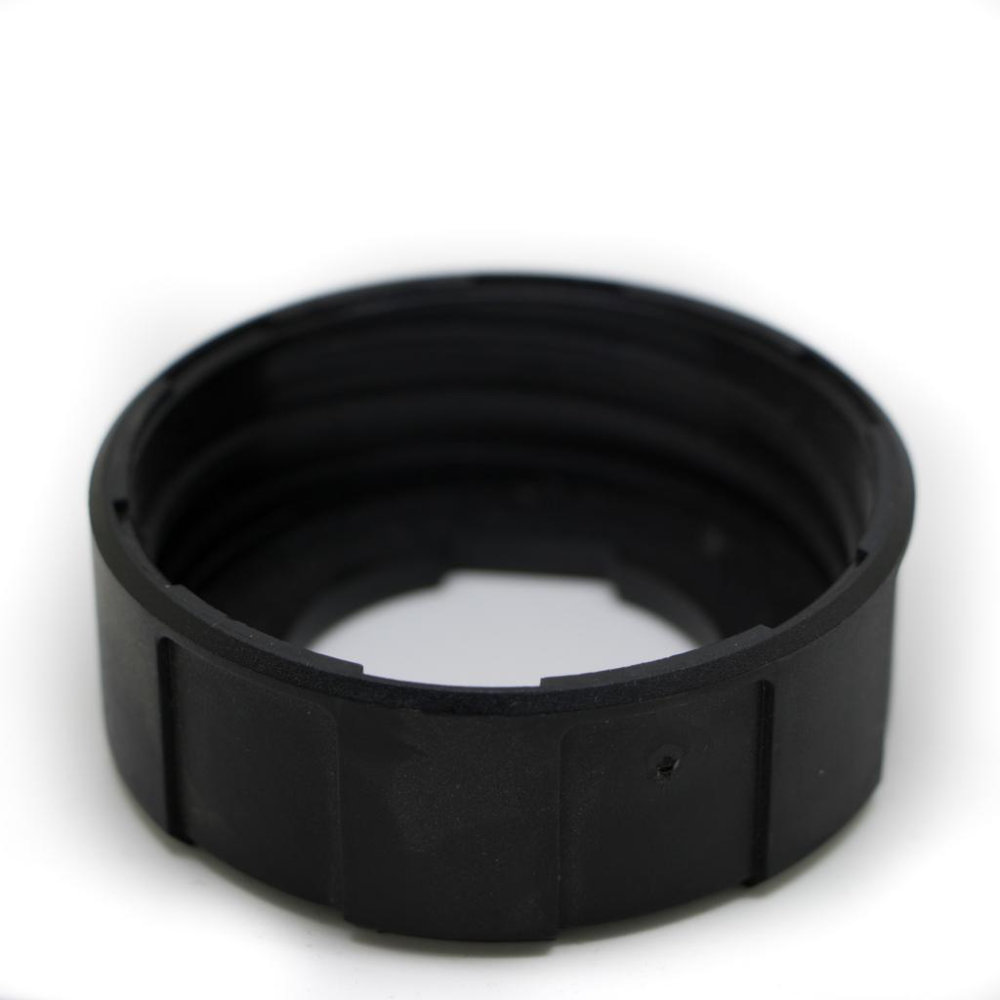

Welcome to bitumas
Bituminė stogo danga (prilydoma), kaina - stogulinija.lt
2020.10.29 08:56 20 metų
mūsų patirties
Jums
Pagrindinis » Stogo danga » Bituminė stogo danga (prilydoma)
Produktų grupės Skarda stogui Lygi skarda Trapecinė stogo danga Klasikinė stogo danga Čerpinis profilis Sinus profiliai Stogo danga Skardinė (plieninė) stogo danga Čerpinis profilis Trapecinė stogo danga Klasikinė stogo danga Sinus profiliai Čerpės Keraminės čerpės Betoninės čerpės Šiferis (banguoti lakštai) Bituminės čerpelės Stogo plokštelės Akmeninė stogo danga (skalūnas) Bituminė stogo danga (prilydoma) Skaidri (PVC) danga (stogams ir fasadams) Skardos lankstiniai Stogo, pamatų plėvelės Difuzinės plėvelės Antikondensacinės plėvelės Plėvelės pamatams Agrotekstilė Tentai Skardinės tvoros Horizontalios tvoros Vertikalios tvoros Žaliuzinės tvoros Stoglangiai, liukai, palėpės laiptai Stoglangiai Liukai Palėpės laiptai Lietvamzdžiai, lietaus nuvedimo sistemos Skardiniai (plieniniai) lietvamzdžiai Lietaus surinkimo trapai Plastikiniai (PVC) lietvamzdžiai Fasadai ir dailylentės Fasado plokštės Plieniniai fasado profiliai Plastikinės (PVC) dailylentės ir priedai Fibrocementinės dailylentės Kaminų sistemos Stogo saugos elementai Sieninės ir stoginės kopėtėlės Apsauginės tvorelės Stogo tilteliai Stogo priedai Ventiliaciniai kaminėliai Kamino sandarinimo juostos Silikonas, hermetikas, mastika Pokraiginės tarpinės Tvirtinimo detalės Korekciniai dažai Paukščių užtvaros Gamintojai SSQ Skalūnas SSQ CEMBRIT Banguoti lakštai Cembrit DuPont Tyvek Difuzinės plėvelės Tyvek KLOBER Ventiliaciniai kaminėliai Klober WIRPLAST Ventiliaciniai kaminėliai Wirplast CAPRICORN Lietaus surinkimo trapai Capricorn BRYZA PVC lietaus nuvedimo sistemos Bryza GAMRAT PVC lietaus nuvedimo sistemos Gamrat BALIO Stoglangiai Balio ROTO Stogo liukai Roto Stoglangiai Roto FAKRO Palėpės laiptai Fakro Stoglangiai Fakro Stogo liukai Fakro VELUX Stoglangiai Velux Stogo liukai Velux RAIKO Lietaus nuvedimo sistemos Raiko FLAMINGO Lietaus nuvedimo sistemos Flamingo CANEXEL Dailylentės Canexel VOX Solid Stone Vox Solid Brick Vox Dailylentės Vox LEIER Kaminai Leier WULCAN Kaminai Wulcan ETERNIT Stogo plokštelės Eternit Fibrocementinės dailylentės Cedral Eternit Banguoti lakštai Eternit ICOPAL Bituminės čerpelės Icopal MIDA Prilydoma danga Mida Bituminės čerpelės Mida KATEPAL Bituminės čerpelės Katepal WIENERBERGER Čerpės Wienerberger ROBEN Čerpės Roben MONIER Čerpės Monier CREATON Čerpės Creaton TONDACH Čerpės Tondach BENDERS Betoninės čerpės Benders Keraminės čerpės Benders PRUSZYNSKI Plieninė stogo danga Pruszynski Klasikinis profilis Pruszynski Trapecinis profilis Pruszynski Čerpinis profilis Pruszynski BUDMAT Fasadai ir dailylentės Budmat Plieniniai fasado profiliai Budmat PVC dailylentės ir jų priedai Budmat Plieninė stogo danga Budmat Banguotas stoginis profilis Budmat Klasikinis profilis Budmat Trapecinis profilis Budmat Čerpinis profilis Budmat RUUKKI Fasadai ir dailylentės Ruukki Plieniniai fasado profiliai Ruukki Plieninė stogo danga Ruukki Valcinis profilis Ruukki Trapecinis profilis Ruukki Čerpinis profilis Ruukki Skambinate +370 677 47255 Konsultuojame Išmatuojame Pristatome SumontuojameBituminė stogo danga (prilydoma)
Prilydoma bituminė danga Uniflex EPP/EMP
Prilydoma bituminė danga Uniflex EKP slate
Prilydoma bituminė danga Uniflex EKP 5,0 slate
Prilydoma bituminė danga Uniflex EKP Extra slate
Bituminė stogo danga arba prilydoma stogo danga dažniausiai būna skirta plokščių stogų viršutinio sluoksnio dengimui. Nors ją galima montuoti ant šlaitinio stogo, tai truks ilgiau ir kainuos brangiau. Bituminės stogo dangos dengimas yra vykdomas ne tik ant stogų, bet ir hidroizoliaciniais tikslais, pavyzdžiui, remontuojant ar įrengiant grindis, pamatus, kitus inžinerinius statinius. Egzistuoja ne viena bituminės stogo dangos klojimo technologija, kaip antai, savaime prilimpančios plokštės, klijuojamos šaltu būdu ir mechaniškai tvirtinamos. „Stogų linijos“ parduodama ir montuojama bituminė stogo danga yra kokybiška, pasižymi puikia kaina, o montavimo darbų metu yra prilydoma naudojant atvirą liepsną su dujų degikliu.
Didžiausi bituminės stogo dangos privalumai
Visų pirma, bituminė stogo danga yra gana lengva, o ją kloti galima ant bet kokio stogo. Ši danga ilgaamžiška, todėl gali tarnauti sąlyginai ilgai. Ritininė bituminė (prilydoma) stogo danga turi puikias hidroizoliacines savybes, todėl ypatingai efektyviai sulaiko drėgmę. Be abejo, dangos savybės, privalumai ir trūkumai priklauso nuo gamintojo, tačiau „Stogų linija“ parduoda tik kokybišką bituminę ruloninę dangą. Bituminė stogo danga ir jos montavimas yra efektyvus sprendimas tiek kaštų prasme, tiek žvelgiant į ilgalaikę stogo eksploataciją.
Nors tai vienas geriausių sprendimų sutapdintam stogui, vis dėlto bituminės stogo dangos klojimas privalo būti patikėtas profesionalams. Svarbu žinoti, kad atsiradus netikslumams teks iš naujo sumontuoti visą viršutinį dangos sluoksnį. Paskutiniai, bet ne mažiau reikšmingi šios dangos privalumai – tai saugumas ir ekologiškumas. Taigi, pasirenkantys šią stogo dangą, gali būti tikri, kad ji nekenkia žmogui ir aplinkai.
Svarbu žinoti norintiems bituminės stogo dangos
Bituminė stogo danga turi gausybę pliusų, tačiau privalu žinoti ir įvairius eksploatacinius niuansus. Akmens skalūnu viršutiniame sluoksnyje padengta danga nėra lengvai prižiūrima, ją sunku remontuoti. Remontuojant būtina perkloti visą plotą, o tai kainuoja brangiai. Danga greitai samanoja, todėl neprižiūrima praranda estetinį žavesį. Visgi, prilydoma bituminė stogo danga tarnaus ilgai, apsaugos pastato vidų nuo lietaus, krušos ir vėjų. Todėl visus, ieškančius nebrangaus, techniškai pažangaus ir ilgai tarnausiančio sprendimo, turėtų dominti bituminė ruloninė stogo danga.
Verta žinoti
Bituminė stogo danga yra gaminama iš SBS. SBS yra polimerais modifikuotas bitumas su mineraliniu užpildu.
„Stogų linija“ siūlo kelių tipų prilydomą bituminę dangą, kuri tiks patiems įvairiausiems stogams. Visi prekių kataloge esantys produktai yra pagaminti pagal EN 13707:2004+A2:2009 standartus.
Kilo klausimų?
Naršant prekių pasiūlą tikrai gali kilti klausimų, tačiau mes visada esame pasiruošę Jums padėti rasti atsakymą. Mes ne tik parduodame dangą, tačiau galime ją sumontuoti. Užtikriname, kad mūsų asortimente randama tik kokybiška bituminė stogo danga Kaune ir visoje Lietuvoje.
Kreipkitės į mus, skambindami numeriu +370 677 47255 ir rašydami elektroninius laiškus į rimas@stogulinija.lt arba gamyba@stogulinija.lt . Be to, galite registruotis konsultacijai ir užpildyti formą. Joje prisekite brėžinius (jeigu jų turite arba jie bus aktualūs užklausai), nurodykite savo kontaktus ir išdėstykite savo rūpesčius ar Jums kylančius klausimus. O mes su Jumis susisieksime, suteiksime išsamią konsultaciją ir padėsime priimti teisingą sprendimą.
Siūlome šių gamintojų produkciją
Meniu Apie mus Akcijos Paslaugos Produktai Įgyvendinti projektai Naudingi straipsniai Karjera Kontaktai Produktai Skarda stogui Stogo danga Skardos lankstiniai Stogo, pamatų plėvelės Skardinės tvoros Stoglangiai, liukai, palėpės laiptai Lietvamzdžiai, lietaus nuvedimo sistemos Fasadai ir dailylentės Kaminų sistemos Stogo saugos elementai Stogo priedai Kontaktai Konsultacijos ir užsakymai: +370 677 47255 rimas@stogulinija.lt Mūsų parduotuvė: Pramonės pr. 16, Kaunas, Prekybos miestelis, Geltonoji galerija, 2 sandėlys, 10 skyrius ( Rasti žemėlapyje ) Sekite mus Facebook Tik savo svetainės lankytojams teikiame
NEMOKAMĄ konsultaciją telefonu
Įveskite žemiau esančiame laukelyje savo
telefono numerį mes Jums paskambinsime
ir atsakysime į visus rūpimus klausimus.
Ačiū, kad kreipiates. Uždaryti Gauti nemokamą konsultaciją Konsultacija vėliau
